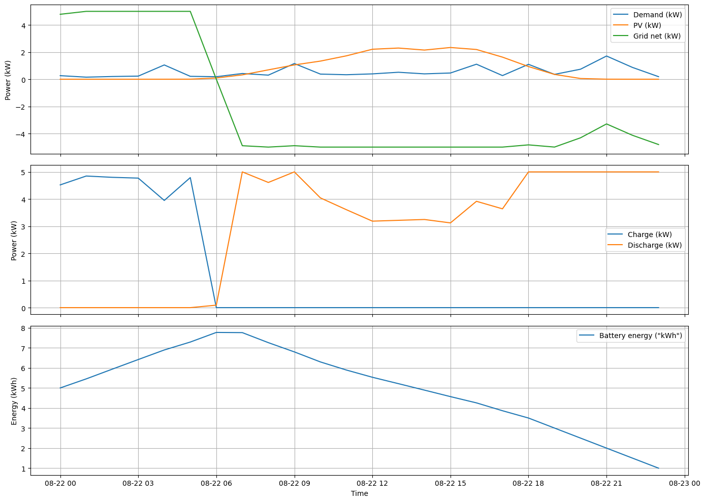

🏠⚡ Home Energy Management Systems (Home EMS)#
1. What is a Home Energy Management System? 🤖#
A Home Energy Management System (EMS) is a smart controller that supervises and optimizes how energy is:
Produced (e.g., rooftop PV ☀️),
Stored (e.g., home battery 🔋),
Consumed (household appliances, heating, EV charging 🧺🚗),
Exchanged with the grid (buying and selling electricity 🔄).
You can think of it as a “traffic controller” for electricity in the home: it constantly monitors the system and decides where energy should flow.
Typical commercial EMS solutions include systems from ENPHASE and LG Electronics, among others.
2. Why Do We Need a Home EMS? ❓#
Modern households often have:
Rooftop solar PV ☀️
Electric vehicles (EVs) 🚗🔌
Batteries 🔋
Time-varying electricity tariffs (time-of-use pricing) ⏰💶
Without a smart EMS:
Solar energy might be wasted (if not used or stored when generated),
Electricity bills may stay high,
The battery and EV may be used in a suboptimal way.
A Home EMS helps to:
💰 Reduce annual electricity bills
☀️ Maximize self-consumption of PV (use your own solar instead of buying from the grid)
🌍 Optionally reduce carbon footprint or support backup power during outages.
3. Main Components of a Home EMS 🧩#
Conceptual components (see Fig. 2 in the description):
Solar PV Panels (PV) ☀️
Generate renewable energy.
Battery Energy Storage System (BESS) 🔋
Stores surplus energy and supplies energy when needed.
Power Electronics 🔌
Inverters, converters, and controllers that manage AC/DC conversions and safe power flows.
Intelligent Supervisory System (Optimization Algorithm) 🧠
Software that decides how much power to:
Take from the grid,
Store in / draw from the battery,
Use directly from PV,
Export back to the grid.
These decisions are computed based on optimization goals, constraints, and forecasts (load, PV, prices, etc.).
import numpy as np
import pandas as pd
import matplotlib.pyplot as plt
from pyomo.environ import (
ConcreteModel, Var, NonNegativeReals, Reals,
Objective, Constraint, ConstraintList, RangeSet,
minimize, SolverFactory, value, inequality
)
# Make plots a bit nicer
plt.rcParams["figure.figsize"] = (12, 6)
plt.rcParams["axes.grid"] = True
Data loading helper#
The CSV is expected to have the following relevant columns:
time– timestamp (hourly)el_price– electricity price (€/kWh)consumption– household consumption (kW)pv_production– PV production (kW or normalized units)
We rename these to the same names used by the EMS model:
PriceDemandPV Generation
def load_kaggle_ems_data(path="kaggle_competition_dataset_with_pv.csv"):
"""Load Kaggle-style EMS dataset and standardize column names.
Parameters
----------
path : str
Path to `kaggle_competition_dataset_with_pv.csv`.
rescale_pv_to_kw : bool
If True, rescale `pv_production` so that its maximum equals `pv_max_kw`.
pv_max_kw : float
Target maximum PV output after rescaling (kW).
"""
df = pd.read_csv(path, parse_dates=["time"])
df = df.set_index("time").sort_index()
# Rename to match EMS model expectations
df = df.rename(columns={
"el_price": "Price",
"consumption": "Demand",
"pv_production": "PV Generation",
})
return df
4. Optimization Problem: Minimizing Electricity Cost 📉#
We consider a simple but realistic goal:
Minimize the electricity bill using optimal control of grid, PV, and battery.
The optimization is typically run for a prediction horizon (e.g. next 24 hours with hourly or 15-min resolution) and repeated continuously (e.g. rolling horizon).
4.1 Objective Function 🎯#
Let:
\( n \) – number of time steps in the optimization window (e.g. \( n=24 \) for 24 hours),
\( t = 1, \dots, n \) – time step index.
We define the total electricity cost over the horizon:
where:
\( Grc_t \) – cost of buying electricity from the grid at time \( t \),
\( GrP_t \) – profit from selling (exporting) electricity to the grid at time \( t \),
\( \mathcal{F} \) – vector of decision variables (e.g. grid power, battery power).
So the EMS tries to minimize net payment to the grid, taking into account both purchases and sales.
4.2 Decision Variables 🔢#
Typical decision variables at each time step \( t \):
\( P_{Gr}[t] \) – grid power flow (positive = import, negative = export),
\( P_{BESS}[t] \) – battery power (positive = discharge to house, negative = charging),
(Optionally) split of PV generation into:
Direct consumption,
Battery charging,
Export to grid.
All these form the optimization vector \( \mathcal{F} \).
4.3 Cost of Buying and Selling Energy 💶#
Let:
\( E_{Gr,t} \) – net energy taken from the grid during time step \( t \),
\( UToU_t \) – time-of-use tariff (€/kWh) at time \( t \),
\( \gamma \in [0,1] \) – Feed-in Tariff (FiT) coefficient, representing the fraction of the purchase price you receive when exporting to the grid (e.g. 0.8 = 20% below the purchase price).
Buying from the grid (import, \( P_{Gr}[t] > 0 \)):
Selling to the grid (export, \( P_{Gr}[t] < 0 \)):
So the EMS earns money when exporting, but usually at a lower rate than the purchase price (FiT < 1).
4.4 From Power to Energy ⏱️#
Energy is power integrated over time:
With constant time step and system conditions, we can compute:
where:
\( S \) – duration of each step in seconds:
Hourly: \( S = 60 \times 60 \),
15-min: \( S = 15 \times 60 \).
This lets us formulate the optimization in terms of power variables with a fixed time step.
5. System Constraints 🧱#
To ensure physical feasibility and safe operation, we impose constraints based on:
PV system capacity,
Battery capacity and charge/discharge limits,
Grid connection limits,
Battery SoC bounds,
Power balance.
5.1 Example Household Configuration 🏡#
Assume:
PV: max 5 kW,
Battery: 10 kWh capacity, ±5 kW charge/discharge,
Grid: max ±5 kW.
Then we must enforce:
Grid power limits:
Battery power limits:
(Here sign convention can be chosen; the key is to limit magnitude.)
Power balance (supply = demand):
where:
\( P_{PV}[t] \) – PV generation at time \( t \) (from forecast or measured profile),
\( P_{L}[t] \) – household load at time \( t \).
Battery energy (SoC) bounds:
Let \( E_{BESS}[t] \) be stored energy in the battery:
Alternatively, define State of Charge (SoC):
Typical practical values:
\( SoC_{\min} \approx 15% \) (avoid deep discharge),
\( SoC_{\max} \approx 90% \) (avoid overcharge).
These protect the battery and extend its lifetime.
🧮 Quick intro to Pyomo#
Pyomo is a Python-based, open-source library for building and solving optimization models. You use it to describe your problem in math-like form (variables, constraints, objective), and then connect it to a solver (e.g. CBC, GLPK, IPOPT, Gurobi, CPLEX).
⭐ What you can do with Pyomo#
🔢 Linear / Mixed-Integer optimization (LP, MILP)
🔄 Nonlinear optimization (NLP, MINLP)
🧱 Build models in a modular, readable way inside normal Python code
🧩 Core building blocks#
In a typical Pyomo script you define:
ConcreteModel()– the model container 📦Sets – indices for time, devices, etc.
Parameters – data (prices, loads, PV, capacities)
Variables – decision variables (grid power, battery power, SoC, …)
Constraints – equations/inequalities (power balance, limits, SoC bounds)
Objective – what to minimize or maximize (e.g. total cost 💶)
def optimize_ems_pyomo(
df,
bess_capacity_kwh=10.0,
batt_p_ch_max_kw=5.0,
batt_p_dis_max_kw=5.0,
grid_p_max_kw=5.0,
bess_init_kwh=5.0,
bess_min_kwh=0.5,
bess_max_kwh=9.5,
gamma=0.8,
solver_name="highs",
verbose=False,
):
"""Single-shot EMS optimization using Pyomo.
Expects df to contain columns:
- 'Price'
- 'Demand'
- 'PV Generation'
"""
dt = 1.0 # hours per timestep (hourly data)
T = len(df)
price = df["Price"].values.astype(float)
demand = df["Demand"].values.astype(float)
pv = df["PV Generation"].values.astype(float)
# ------------------------------------------------------------------
# Pyomo model
# ------------------------------------------------------------------
m = ConcreteModel()
# Time indices: 0 .. T-1
m.T = RangeSet(0, T - 1)
# Battery energy indices: 0 .. T (T+1 states)
m.Tsoc = RangeSet(0, T)
# Decision variables
m.P_grid_pos = Var(m.T, domain=NonNegativeReals) # grid import (kW)
m.P_grid_neg = Var(m.T, domain=NonNegativeReals) # grid export (kW)
m.P_charge = Var(m.T, domain=NonNegativeReals) # battery charging power (kW)
m.P_discharge = Var(m.T, domain=NonNegativeReals) # battery discharging power (kW)
m.bess_energy = Var(m.Tsoc, domain=Reals) # state of charge (kWh-like units)
# ------------------------------------------------------------------
# Objective: minimize cost of energy = import*price - gamma*export*price
# ------------------------------------------------------------------
def obj_rule(model):
return sum(
(model.P_grid_pos[t] * price[t] * dt
- model.P_grid_neg[t] * price[t] * gamma * dt)
for t in model.T
)
m.obj = Objective(rule=obj_rule, sense=minimize)
# ------------------------------------------------------------------
# Constraints
# ------------------------------------------------------------------
m.constraints = ConstraintList()
# Initial SOC
m.constraints.add(m.bess_energy[0] == bess_init_kwh)
# SOC dynamics (kept identical to original CVXPY version):
# E[t+1] = E[t] + (P_charge[t] - P_discharge[t]) * dt / bess_capacity_kwh
for t in m.T:
m.constraints.add(
m.bess_energy[t + 1]
== m.bess_energy[t]
+ (m.P_charge[t] - m.P_discharge[t]) * dt / bess_capacity_kwh
)
# SOC bounds
for t in m.Tsoc:
m.constraints.add(
inequality(bess_min_kwh, m.bess_energy[t], bess_max_kwh)
)
# Power bounds
for t in m.T:
m.constraints.add(m.P_charge[t] <= batt_p_ch_max_kw)
m.constraints.add(m.P_discharge[t] <= batt_p_dis_max_kw)
m.constraints.add(m.P_grid_pos[t] <= grid_p_max_kw)
m.constraints.add(m.P_grid_neg[t] <= grid_p_max_kw)
# Power balance: grid + battery + PV must cover demand
for t in m.T:
m.constraints.add(
m.P_grid_pos[t] - m.P_grid_neg[t]
+ m.P_discharge[t] - m.P_charge[t]
+ pv[t] == demand[t]
)
# ------------------------------------------------------------------
# Solve
# ------------------------------------------------------------------
solver = SolverFactory(solver_name)
results = solver.solve(m, tee=verbose)
# ------------------------------------------------------------------
# Collect results into a DataFrame
# ------------------------------------------------------------------
res = pd.DataFrame(index=df.index.copy())
res["P_grid_import_kW"] = [value(m.P_grid_pos[t]) for t in m.T]
res["P_grid_export_kW"] = [value(m.P_grid_neg[t]) for t in m.T]
res["P_grid_net_kW"] = (
res["P_grid_import_kW"] - res["P_grid_export_kW"]
)
res["P_charge_kW"] = [value(m.P_charge[t]) for t in m.T]
res["P_discharge_kW"] = [value(m.P_discharge[t]) for t in m.T]
res["P_bess_net_kW"] = (
res["P_discharge_kW"] - res["P_charge_kW"]
)
# Drop the last SOC element to align with time steps
res["bess_kWh"] = [value(m.bess_energy[t]) for t in range(T)]
# Copy original series for convenience
res["PV_kW"] = df["PV Generation"].values
res["Demand_kW"] = df["Demand"].values
res["Price"] = df["Price"].values
# Compute total cost (same formula as in original script)
total_cost = float(
np.sum(
res["P_grid_import_kW"] * res["Price"] * dt
- res["P_grid_export_kW"] * res["Price"] * gamma * dt
)
)
return res, total_cost
6. How the EMS Uses Optimization in Practice 🔁#
In a real deployment, the EMS typically:
Collects data 📡
Load forecast, PV forecast, price forecast, current SoC.
Sets up the optimization problem 🧮
Objective: minimize net cost.
Decision variables: grid power, battery power, etc.
Constraints: power limits, SoC bounds, power balance.
Solves the optimization for a horizon (e.g. next 24 hours).
Applies only the first control action (e.g. set power setpoints for the next time step).
Repeats the process at the next time step (receding/rolling horizon).
This is very similar to Model Predictive Control (MPC), but with a strong emphasis on economic optimization (electricity cost).
# Load Kaggle dataset
df = load_kaggle_ems_data('/data/kaggle_competition_dataset_with_pv.csv')
df_day = df.loc["2022-08-22"]
print(df_day.head())
print("\nPV Generation max (kW):", df_day["PV Generation"].max())
temp dwpt rhum prcp snow wdir wspd wpgt pres \
time
2022-08-22 00:00:00 19.1 15.2 78.0 0.0 NaN 150.0 11.0 16.7 1014.0
2022-08-22 01:00:00 19.1 14.2 73.0 0.0 NaN 140.0 9.0 16.7 1014.0
2022-08-22 02:00:00 18.1 14.2 78.0 0.0 NaN 140.0 7.0 16.7 1014.0
2022-08-22 03:00:00 19.2 15.7 80.0 0.0 NaN 160.0 7.0 16.7 1014.1
2022-08-22 04:00:00 16.1 13.0 82.0 0.0 NaN 150.0 6.0 14.8 1014.0
coco Price Demand PV Generation
time
2022-08-22 00:00:00 2.0 0.13995 0.263 0.0
2022-08-22 01:00:00 4.0 0.00455 0.152 0.0
2022-08-22 02:00:00 3.0 0.00304 0.200 0.0
2022-08-22 03:00:00 4.0 0.00238 0.229 0.0
2022-08-22 04:00:00 3.0 0.00238 1.052 0.0
PV Generation max (kW): 2.3366666666666664
# Run the Pyomo-based optimization
results_pyomo, cost_pyomo = optimize_ems_pyomo(
df_day,
bess_capacity_kwh=10.0,
batt_p_ch_max_kw=5.0,
batt_p_dis_max_kw=5.0,
grid_p_max_kw=5.0,
bess_init_kwh=5.0,
bess_min_kwh=0.5,
bess_max_kwh=9.5,
gamma=0.8,
solver_name="highs", # change if you use another solver
verbose=False,
)
print(f"Total cost over horizon (Pyomo): {cost_pyomo:.2f} €")
results_pyomo.head()
Total cost over horizon (Pyomo): -32.07 €
| P_grid_import_kW | P_grid_export_kW | P_grid_net_kW | P_charge_kW | P_discharge_kW | P_bess_net_kW | bess_kWh | PV_kW | Demand_kW | Price | |
|---|---|---|---|---|---|---|---|---|---|---|
| time | ||||||||||
| 2022-08-22 00:00:00 | 4.784667 | 0.0 | 4.784667 | 4.521667 | 0.0 | -4.521667 | 5.000000 | 0.0 | 0.263 | 0.13995 |
| 2022-08-22 01:00:00 | 5.000000 | 0.0 | 5.000000 | 4.848000 | 0.0 | -4.848000 | 5.452167 | 0.0 | 0.152 | 0.00455 |
| 2022-08-22 02:00:00 | 5.000000 | 0.0 | 5.000000 | 4.800000 | 0.0 | -4.800000 | 5.936967 | 0.0 | 0.200 | 0.00304 |
| 2022-08-22 03:00:00 | 5.000000 | 0.0 | 5.000000 | 4.771000 | 0.0 | -4.771000 | 6.416967 | 0.0 | 0.229 | 0.00238 |
| 2022-08-22 04:00:00 | 5.000000 | 0.0 | 5.000000 | 3.948000 | 0.0 | -3.948000 | 6.894067 | 0.0 | 1.052 | 0.00238 |
7. Summary 📝#
A Home EMS coordinates PV, battery, load, and grid interaction to reduce costs and increase self-consumption.
The core of the tutorial is an optimization problem:
Objective: minimize total net grid cost.
Variables: grid import/export, battery charge/discharge, PV allocation.
Constraints: device limits, power balance, battery SoC bounds.
Using such an optimization-based EMS, households can:
Use more of their own solar,
Shift consumption to cheaper periods,
Limit exports when FiT is low,
And generally operate the home as a small smart energy system. 🌍⚡
fig, axes = plt.subplots(3, 1, figsize=(14, 10), sharex=True)
# 1) Demand, PV, and net grid power
axes[0].plot(results_pyomo.index, results_pyomo["Demand_kW"], label="Demand (kW)")
axes[0].plot(results_pyomo.index, results_pyomo["PV_kW"], label="PV (kW)")
axes[0].plot(results_pyomo.index, results_pyomo["P_grid_net_kW"], label="Grid net (kW)")
axes[0].set_ylabel("Power (kW)")
axes[0].legend()
# 2) Battery charge/discharge
axes[1].plot(results_pyomo.index, results_pyomo["P_charge_kW"], label="Charge (kW)")
axes[1].plot(results_pyomo.index, results_pyomo["P_discharge_kW"], label="Discharge (kW)")
axes[1].set_ylabel("Power (kW)")
axes[1].legend()
# 3) Battery energy (kWh)
axes[2].plot(results_pyomo.index, results_pyomo["bess_kWh"], label='Battery energy ("kWh")')
axes[2].set_ylabel("Energy (kWh)")
axes[2].set_xlabel("Time")
axes[2].legend()
plt.tight_layout()
plt.show()
